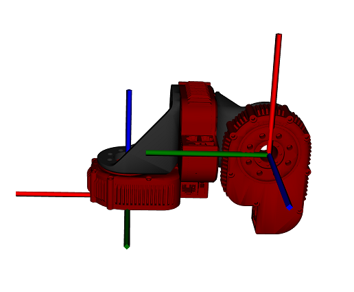
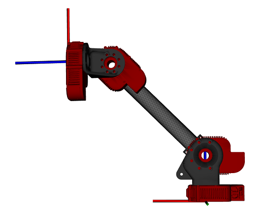
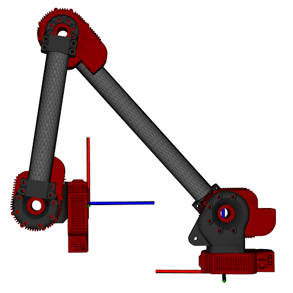

Contents
% This example shows howto use the HebiKinematics API to calculate inverse % kinematics. % % Requirements: MATLAB 2013b or higher % % Author: Florian Enner % Created: 14 July, 2017 % API: hebi-matlab-1.0 % % Copyright 2017 HEBI Robotics
General
The inverse kinematics method computes the joint positions associated to a desired end-effector configuration. The end effector is assumed to be the last body in the kinematic chain. There are a variety of optimization criteria that can be combined depending on the application.
The resulting positions are calculated using a numerical IK approach that is independent of the configuration. Please be aware of the following:
- There are no collision checks
- A result will always be returned, even if the criteria have not been matched. It is up to the user to check whether the result is satisfactory.
- The hardware may not have enough degrees of freedom to provide a valid solution, e.g., a 2 dof arm can't reach a 6 dof target
When working with real hardware it is generally a good idea to seed the optimization with 'reasonable' initial positions such as the previous results or the current position feedback.
For more information please consult our online documentation and the help files.
IK: XYZ Position Target
The 'xyz' target finds angles that match the corresponding end effector position. It ignores the end effector orientation. It always expects a 1x3 vector, but unused axes can be omitted by setting the desired value to nan. This is useful for e.g. planar robots that are constrained in one axis.
% Setup 2 dof planar RR arm kin = HebiKinematics(); kin.addBody('X5-4'); % base joint kin.addBody('X5-Link', 'ext', 0.35, 'twist', pi); kin.addBody('X5-1'); kin.addBody('X5-Link', 'ext', 0.25, 'twist', pi); % Find a solution for a desired x/y target (ignore z) desiredXyz = [0.4 0.1 nan]; % [m] ikAngles = kin.getInverseKinematics('xyz', desiredXyz);

% Display
endEffector = kin.getForwardKinematicsEndEffector(ikAngles);
actualXyz = endEffector(1:3,4)';
display(desiredXyz);
display(ikAngles);
display(actualXyz);
desiredXyz =
0.4000 0.1000 NaN
ikAngles =
-0.4037 -1.6567
actualXyz =
0.4000 0.1000 -0.0000
IK: SO3 Rotation Target
The 'SO3' target aligns the end effector orientation with the desired rotation matrix.
% Setup 3-DoF Wrist kin = HebiKinematics(); kin.addBody('X5-1'); kin.addBody('X5-LightBracket', 'mount', 'right'); kin.addBody('X5-1'); kin.addBody('X5-LightBracket', 'mount', 'left'); kin.addBody('X5-1'); % Find a solution for a desired 3x3 orientation matrix desiredR = [ 0 1 0 0 0 1 1 0 0 ]; ikAngles = kin.getInverseKinematics('SO3', desiredR);

% Display
endEffector = kin.getForwardKinematicsEndEffector(ikAngles);
actualR = round(endEffector(1:3,1:3), 3);
display(desiredR);
display(ikAngles);
display(actualR);
desiredR =
0 1 0
0 0 1
1 0 0
ikAngles =
-1.5708 1.5708 0.0000
actualR =
0 1 0
0 0 1
1 0 0
IK: Tip Axis Target
The 'TipAxis' target aligns the end effector z axis with the desired axis. This is useful for cases where the end effector needs to point in a certain direction (e.g. down)
% Setup 4-DoF arm kin = HebiKinematics(); kin.addBody('X5-4'); % base joint kin.addBody('X5-HeavyBracket', 'mount', 'right-inside'); kin.addBody('X5-9'); kin.addBody('X5-Link', 'ext', 0.250, 'twist', pi); kin.addBody('X5-1'); kin.addBody('X5-LightBracket', 'mount', 'left'); kin.addBody('X5-1'); % Find a solution for aligning end effector z axis with desired axis desiredAxis = [1 0 0]; % point towards positive x ikAngles = kin.getInverseKinematics('TipAxis', desiredAxis);

% Display
endEffector = kin.getForwardKinematicsEndEffector(ikAngles);
endEffector = round(endEffector,3);
display(desiredAxis);
display(ikAngles);
display(endEffector);
desiredAxis =
1 0 0
ikAngles =
-0.0000 0.7768 -0.7768 0
endEffector =
0.0170 0 1.0000 0.2520
0 -1.0000 0 0.0620
1.0000 0 -0.0170 0.2600
0 0 0 1.0000
Combining multiple targets
Targets can be combined as required for the application.
% Setup 5-DoF Arm kin = HebiKinematics(); kin.addBody('X5-4'); % base joint kin.addBody('X5-HeavyBracket', 'mount', 'right-inside'); kin.addBody('X5-9'); kin.addBody('X5-Link', 'ext', 0.350, 'twist', pi); kin.addBody('X5-9'); kin.addBody('X5-Link', 'ext', 0.250, 'twist', pi); kin.addBody('X5-1'); kin.addBody('X5-LightBracket', 'mount', 'left'); kin.addBody('X5-1'); % Find a solution that satisfies two targets initial = [0 pi/2 0 0 0]; % initialize to elbow up desiredXyz = [0.2 0 0.1]; % xyz target desiredAxis = [-1 0 0]; % face towards negative x ikAngles = kin.getInverseKinematics(... 'xyz', desiredXyz, ... 'TipAxis', desiredAxis, ... 'Initial', initial);

% Display
endEffector = kin.getForwardKinematicsEndEffector(ikAngles);
endEffector = round(endEffector,3);
display(initial);
display(desiredXyz);
display(desiredAxis);
display(ikAngles);
display(endEffector);
initial =
0 1.5708 0 0 0
desiredXyz =
0.2000 0 0.1000
desiredAxis =
-1 0 0
ikAngles =
0.1757 0.8420 2.2609 2.9900 0
endEffector =
0 -0.1750 -0.9850 0.2020
0 0.9850 -0.1750 -0.0130
1.0000 0 0 0.1000
0 0 0 1.0000